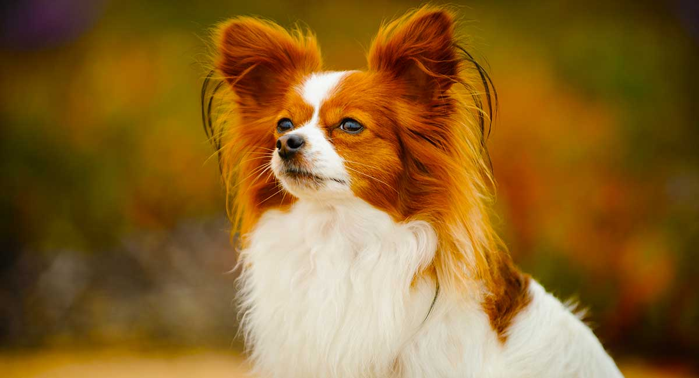

About the Papillon

A tiny dog, measuring 8 to 11 inches at the shoulder, you can still spot a Papillon a block away thanks to the large, wing-shaped ears that give the breed its name (“papillon” is French for “butterfly”). Some Paps have erect ears; in others, known as the Phalene type, the ears are down. Paps are dainty and elegant, with a plumed tail, and a long, silky coat of several color combinations, the base color being white. More robust than they look, Paps are little dogs for all seasons and reasons. They thrive in warm or cool climates, in town or country, and are eager to join family fun. They are excellent agility dogs and are consistent winners at the sport’s highest levels; less ambitious owners can train them to do all kinds of tricks.
Temperament:
Loyal, Mischievous, Outgoing
Height: 8-11 inches
5-10 pounds
Life Expectancy: 14-16 years
CARE

Nutration
The Papillon should do well on a high-quality dog food, whether commercially manufactured or home-prepared with your veterinarian’s supervision and approval. Any diet should be appropriate to the dog’s age (puppy, adult, or senior). Some dogs are prone to getting overweight, so watch your dog’s calorie consumption and weight level. Treats can be an important aid in training, but giving too many can cause obesity. Learn about which human foods are safe for dogs, and which are not. Check with your vet if you have any concerns about your dog’s weight or diet. Clean, fresh water should be available at all times.
Grooming
For a breed with long, silky hair, Papillons needs surprisingly little grooming, mostly because they do not have an undercoat. Grooming every month or so is fine. Between full grooming sessions, you might want to spend a few minutes running a comb or soft slicker brush through the hair inside the hind legs, behind the ears, and on the “culottes,” or thigh hair, as mats tend to form there. A Papillon will need a bath every few months, or when he or she gets especially muddy or dirty. The Papillon’s nails grow quickly and should be trimmed regularly—especially the dewclaw, which can curl around and pierce the leg. Finally, regular tooth brushing is vital for dental health..
Exercise
Thanks to their small size, Papillons make wonderful indoor pets, but that doesn’t mean they don’t need exercise. They are active, smart dogs, and they will want their people to play with them. Indoors, they enjoy retrieving a small ball or toy—a Papillon will quickly learn to bring it back so you can throw it again. Outdoors, true to their spaniel heritage, Papillons will happily run in the yard to chase after squirrels, chipmunks, and even insects. Papillons tend not to realize how small they actually are, so owners need to watch carefully if they set out after a larger dog, or even a cat.
Training
Papillons are intelligent and eager to please the humans they have bonded with. Generally speaking, some small breeds can take a little longer to housetrain than large breeds do, but Papillons make the process easier. Early socializationis very important, and obedience classes are a good idea—your Papillon will learn to do what you tell him to, and you will learn not to overindulge your adorable companion. And remember that the Papillon is a companion dog at heart; they may be unhappy and develop undesirable behaviors if left left alone for long periods of time. Fortunately, a Papillon can bond with other pets as well as humans.
Health
Papillons are tough and gutsy, but they are very small. Owners need to be careful with them, especially when they are puppies, around stairs, furniture, and other, larger animals. A small child can accidentally hurt his puppy friend very easily. Responsible breeders screen their stock for health conditions such as a fontanel in the top of the skull, similar to a human baby’s soft spot; and patellar luxation, or kneecaps that can “slip” or dislocate, sometimes briefly, sometimes completely.
History
Papillons were originally bred as charming and attentive companions for noblewomen, and for hundreds of years these enchanting lap warmers were great favorites in the royal courts of Europe. They appear in many portraits of long-ago queens and princesses painted by Europe’s most renowned artists. Rubens, Rembrandt, Goya, and Toulouse-Lautrec are among the masters who included Papillons in their paintings. Paps were developed in Renaissance times by crossing existing toy breeds with spaniels (the breed’s early ancestors were known as “dwarf spaniels”) in keeping with the era’s mania among nobles for miniaturized versions of their favorite breeds. The sporting-spaniel blood in the Pap’s background might explain why these dainty dynamos are among the more athletic and biddable toy dogs in the canine kingdom. With admirers like Madame de Pompadour, Louis XIV, and Marie Antoinette (whose Pap, named Thisbe, stood faithfully outside the prison where the hapless queen awaited beheading), the breed’s French connection is strong. But it was in the early breeding centers of Italy and Spain that Paps were refined and popularized. The AKC registered its first Papillon in 1915.
General Aperence
The Papillon is a small, friendly, elegant toy dog of fine-boned structure, light, dainty and of lively action; distinguished from other breeds by its beautiful butterfly-like ears.

HEAD
Eyes dark, round, not bulging, of medium size and alert in expression. The inner corners of the eyes are on line with the stop. Eye rims black. Ears – The ears of either the erect or drop type should be large with rounded tips, and set on the sides and toward the back of the head. (1) Ears of the erect type are carried obliquely and move like the spread wings of a butterfly. When alert, each ear forms an angle of approximately 45 degrees to the head. The leather should be of sufficient strength to maintain the erect position. (2) Ears of the drop type, known as the Phalene, are similar to the erect type, but are carried drooping and must be completely down.
BODY
Neck of medium length. Topline – The backline is straight and level. Body – The chest is of medium depth with ribs well sprung. The belly is tucked up. Tail long, set high and carried well arched over the body. The tail is covered with a long, flowing plume. The plume may hang to either side of the body. Faults – Low-set tail; one not arched over the back, or too short.
FOREQUARTERS
Shoulders well developed and laid back to allow freedom of movement. Forelegs slender, fine-boned and must be straight. Removal of dewclaws on forelegs optional. Front feet thin and elongated (hare-like), pointing neither in nor out.
COAT
Abundant, long, fine, silky, flowing, straight with resilient quality, flat on back and sides of body. A profuse frill on chest. There is no undercoat. Hair short and close on skull, muzzle, front of forelegs, and from hind feet to hocks. Ears well fringed, with the inside covered with silken hair of medium length. Backs of the forelegs are covered with feathers diminishing to the pasterns. Hind legs are covered to the hocks with abundant breeches (culottes). Tail is covered with a long, flowing plume. Hair on feet is short, but fine tufts may appear over toes and grow beyond them, forming a point.
HINDQUARTERS
Well developed and well angulated. The hind legs are slender, fine-boned, and parallel when viewed from behind. Hocks inclined neither in nor out. Dewclaws, if any, must be removed from hind legs. Hind feet thin and elongated (hare-like), pointing neither in nor out.